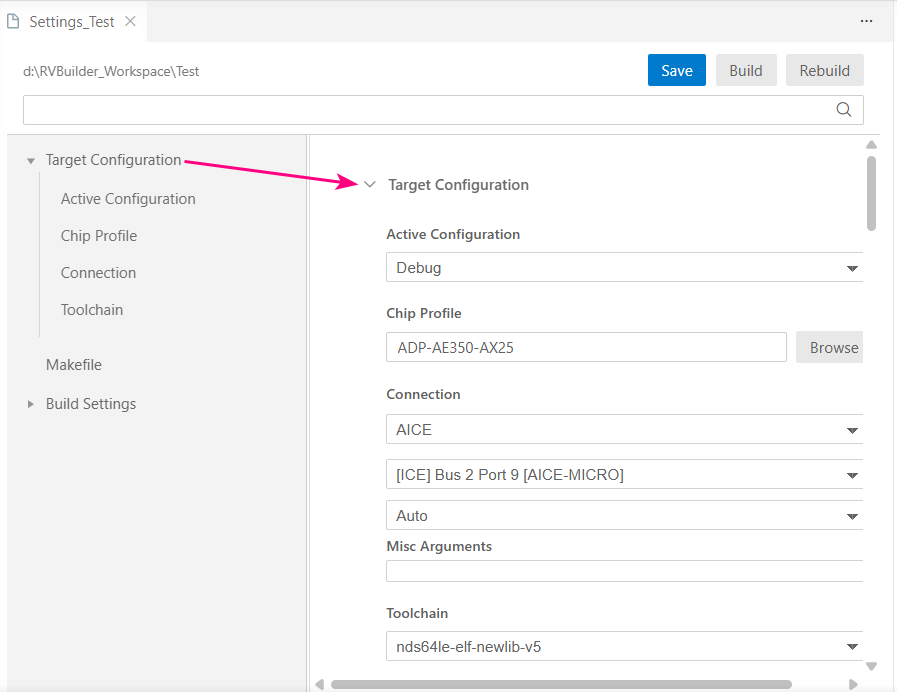
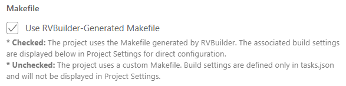
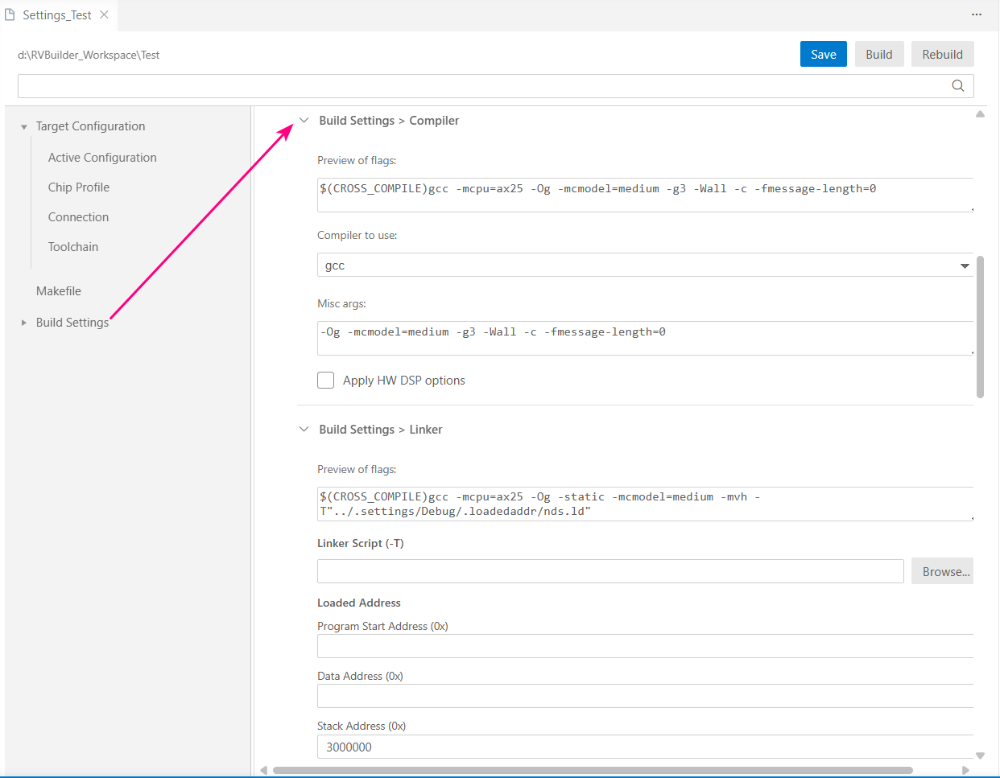

Configure a Project
RVBuilder provides a graphical user interface (GUI) for configuring target and build settings for a project. The configuration interface can be opened by right-clicking the project in the Explorer view and selecting "RVBuilder: Build Project" from the drop-down menu.
Target Configuration

| Configuration Option | Description | Notes |
|---|---|---|
| Active Configuration | Selects the build configuration for the project. Available options include Debug and Release. | |
| Chip Profile | Specifies the chip profile associated with the target. The chip profile defines the target specifications and corresponding software configuration files. | See Chip Profiles. |
| Connection | Specifies the target connection type used for development. Supported connection types include AICE, Andes QEMU, Maverick, and GDB server. For details of the connection types, see Target Connection. | For local target connections, additional options can be specified in Misc Arguments field. See Andes QEMU Emulator Reference Manual and Andes ICE Management Software (ICEman) User Manual for available options for Andes QEMU or AICE connection. For AICE connection, also take note of the following: 1. RVBuilder automatically detects and displays the plugged-in ICE device along with its position. If multiple local ICE devices are detected, they are listed together for selection. 2. When using an AICE-MINI+, AICE-T2 or AICE MICRO ICE box, you must specify the debug interface of the target board. Available options include • Auto: Tries the JDP mode first. If it fails, use the SDP mode. • SDP (2-wire): Uses the SDP mode (with 2-wire debug interface). • JDP (4-wire): Uses the JDP mode (with 4-wire debug interface) |
| Toolchain | Displays the toolchain selected for the target. | See Toolchains. |
Makefile
The Makefile section specifies whether the project uses the Makefile automatically generated by RVBuilder.
- Use RVBuilder-Generated Makefile: When checked, the project uses the Makefile generated by RVBuilder, allowing build settings to be managed directly through the Project Settings interface. If the project uses a custom Makefile, uncheck this option.

Build Settings
For a project configured to use the RVBuilder-generated Makefile, RVBuilder displays the build settings in the Project Settings interface. You can configure the compiler, linker, assembler, GNU bin utilities (NM, Readelf, Objdump, Objcopy, Size), and linker script generator (LdSaG) directly in Project Settings.
For most build tools or utilities in the Build Settings section, their configuration interface includes:
- Preview of flags: Displays the complete command-line options currently applied to the tool or utility.
- Misc Args: Allows you to specify additional or specialized options for the tool or utility. For the options supported by the selected toolchain, see Toolchains.
The interface also includes additional configuration settings for certain tools and utilities, as outlined below.

Compiler
- Compiler to use: Specifies the compiler to use for the build. Available options include GCC and LLVM.
- Apply HW DSP options: When selected, applies compiler and linker options that enable the DSP ISA extension supported by the target.
Linker
- Linker Script (-T): Specifies a custom linker script for the target. This field is overwritten and shown as
$(LDSAG_OUT)when the LdSaG tool is enabled (i.e., when the Generate linker script option in the LdSaG settings is selected). - Loaded Address: Specifies the memory addresses used when loading the program image. This section is only available when a custom linker script (i.e., not generated by LdSaG) is used.
- Program Start Address (0x): Specifies the start address of the program in target memory.
- Data Address (0x): Specifies the start address of the program data in target memory.
- Stack Address (0x): Specifies the start address of the stack in target memory.
- Libraries (-l): Specifies additional libraries to link with the program. Multiple libraries can be added using the Add button.
LdSaG Tool
- Generate linker script: Enables generation of a linker script based on the specified image layout description file written in Andes Scattering-and-Gathering (SaG) syntax.
- Linker script template: Specifies the linker script template used by the LdSaG tool. The default template for Andes RISC-V targets is
nds32_template_v5.txtin the RVBuilder package. - SaG file: Specifies a SaG description file (
*.sag) that defines the memory layout for a RISC-V program. - Other flags: Optionally, specifies LdSaG options to control the linker script generation process.
For details about the LdSaG tool, see Linker Script Generator.